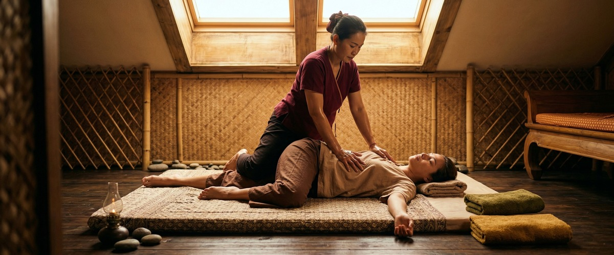
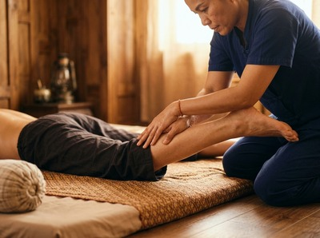
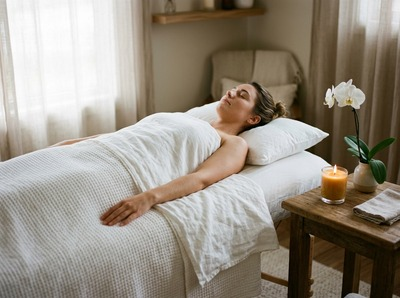

Most people have heard of Thai massage, but fewer realise it isn't just one thing.

Thai massage is a family of techniques rooted in ancient tradition. The type that's right for you depends on what your body actually needs. Whether you're dealing with chronic muscle tension, recovering from sport, or simply looking for an hour of deep, genuine rest, there's a specific style of Thai massage that fits.
Traditional Thai massage, sometimes called nuad thai or "ancient-style massage," is done fully clothed on a floor mat with no oils. Your therapist works along the body's sen energy lines using rhythmic acupressure, assisted stretching, and gentle joint movement to release tension and restore balance. Most people feel like they've had a workout and a rest at the same time.

This is the style Maliwan studied at the Wat Pho Thai Massage School in Bangkok — the school credited with preserving and formalising traditional Thai massage. At Glasgow Thai Massage, it's the foundation everything else builds from.
Thai oil massage combines the core principles of traditional Thai technique with heated therapeutic oils applied to the skin. The pressure, rhythm, and focus on energy lines stay the same, but the oils allow for longer, flowing strokes that work well for surface muscle tension.
It's also a more deeply relaxing experience overall. If you're new to Thai massage and unsure what to expect, this is a great place to start.
Thai sports massage is a targeted treatment for people who train, compete, or put their bodies under regular physical demand. It combines deep tissue work on specific muscle groups with the assisted stretching that makes Thai massage distinctive. It targets restricted movement and built-up tightness that affects performance and raises injury risk.
This isn't a general relaxation session. It's precise, focused, and built around what your body needs to recover and move well.
Runners, cyclists, and gym-goers in Glasgow have found it useful for hip flexor tightness, hamstring restriction, and shoulder tension that builds when upper-body training isn't balanced with proper recovery. If you'd like to book a sports massage session, you can do so online in a few minutes.
Thai aromatherapy massage builds on the oil massage format, adding high-grade essential oils chosen for their specific properties — lavender for calming, eucalyptus for muscle relief, and others depending on what you need that day.
The blend of skilled touch and absorbed aromatherapy can work well for stress-related tension, poor sleep, and anxiety that shows up physically as tightness in the neck, shoulders, and jaw.
Thai foot massage works on the feet, soles, and lower legs through targeted pressure point work and stretching. In traditional Thai medicine, the feet contain reflex zones that connect to organs and systems throughout the body.
Working them thoroughly can produce a sense of whole-body ease that goes well beyond what you'd expect. It's also genuinely useful for anyone who spends long hours standing or on their feet at work.
Thai head massage targets the scalp, neck, and upper shoulders — exactly where stress tends to gather. For office workers or anyone who spends long hours at a desk, it addresses the source of tension headaches, eye strain, and neck stiffness that builds across a working week.
It's one of the shorter treatments available. But its effect on clarity and calm is well out of proportion to the time it takes.

Thai stone massage uses heated basalt stones as an extension of the therapist's hands. Their warmth prepares muscles for deeper work and boosts circulation in areas that carry long-term tension. The heat reaches layers that manual pressure alone can't match.
That makes it useful for deep back pain, cold-related muscle stiffness, and anyone who finds pure pressure too intense. Many clients return to this treatment through Glasgow's colder months, when muscles tighten and movement feels more restricted.
The right type of Thai massage depends on what's going on in your body right now. If you're not sure where to start, book a session at Glasgow Thai Massage and your therapist will help you choose the treatment that fits best.
Traditional Thai massage is done fully clothed on a floor mat. It uses acupressure, assisted stretching, and joint movement — no oils. Thai oil massage applies heated therapeutic oils to the skin and uses longer, flowing strokes alongside the same energy-line approach.
Traditional Thai tends to be more intense and movement-based. Oil massage feels more fluid and is a popular starting point for first-time clients.
It depends on the cause and location of the pain. Traditional Thai massage and Thai sports massage both work well for muscular back pain, restricted movement, and postural tightness. Thai stone massage is particularly effective for deep, long-term tension in the back.
The heat from the stones reaches muscle layers that manual pressure alone can struggle to access. If your back pain involves the lower back or radiates down the leg, it's worth reading about massage for sciatica before booking.
For traditional Thai massage and Thai sports massage, you stay fully clothed in loose, comfortable clothing throughout. For Thai oil massage, Thai aromatherapy massage, and Thai stone massage, you undress to your underwear.
You are draped and covered at all times, with your privacy fully maintained. Your therapist will explain exactly what to expect before the session begins.
Thai oil massage is often the best starting point. It combines traditional technique with a gentler, more familiar feel. If you have a specific concern — sports recovery, chronic back pain, or stress and poor sleep — it's worth choosing the treatment designed for that purpose.
You can always call Glasgow Thai Massage before booking. Your therapist will point you in the right direction based on what you're dealing with.
For general upkeep and stress management, once or twice a month works well for most people. If you're tackling a specific issue — chronic muscle tension, back pain, or sports recovery — a more frequent course of sessions tends to give better results.
Weekly sessions for four to six weeks is a good guide. Your therapist can advise on a realistic schedule after your first session.